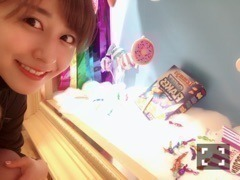
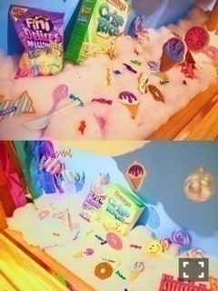
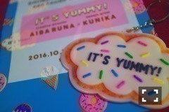

| 2016/10 28 Fri | 斎藤ちはる 目の保養と心の刺激。 |
ちはるーむへようこそ！
今日は新宿伊勢丹で展示している
AIBA RUNAさんとKUNIKAさんが
コラボしているアートフレームを
観に行ってきました(﹡ˆ ˆ﹡)

自撮りしたらせっかく可愛いのが
見えないので、自慢のカメラで撮ったやつを
載せます〜( ◦˙ ˙◦ )笑

とっても可愛い世界観！！
THE 私の大好きなものって感じ！！
KUNIKAさんの作るクッキーが
本当にどれを見ても可愛くて素敵。
KUNIKAさんの作品を追ってなら
どこでも行けそうってくらいにファンです！笑
RUNAさんのカラフルでアメリカンで
ポップな雰囲気が大好き。
歳もそんなに変わらないのに
自らのブランドを立ち上げたり
人としても憧れる！
もちろんグッズも買ってしまいました。
本当は全部欲しかったけど我慢(> <)

可愛すぎるストラップ！
どこにつけよう！
迷う！可愛すぎて！！
はぁ〜目の保養だったな〜◎
そして刺激にもなりました！
私も、もっと。
-------------------------♡
明日は握手会だ〜◎
ハロウィン前ってことで...
定番だけどしたことのなかった
あのコスプレをしたいと思います( ¨̮ )ふふ
そして16thの握手会、
またしても完売が出たようでしてヽ(；；)丿
更に、地方が全完売にヽ(；；)丿
ああ嬉しい。。
前までの私とは全然違うスピードで
完売が出ていて、
私自身も驚いています。
皆さんが来たいと思ってくれていること。
わざわざ予定を立てて、予定を空けて、
会いに行きたいと思ってくれていること。
本当に嬉しいし、
来てくださるからには
とことん楽しい思い出にしたい！
来てよかったなって。
ちはると話すの楽しいなって。
また会いに来ようかなって。
そう思ってもらえるように
私も成長していかなければ...！
頑張るからね(﹡ˆ ˆ﹡)
まだ残っている部数や日にちもあるので
是非。待っています。
-------------------------♡
♬ ChihaMusic
「多分、風」サカナクションさん
今日のMステも観ていました！
演出や映像、そして曲の格好良さに
改めて感動。
サカナクションさんやはり凄い〜
この曲の爽快感も好きだけど
何かが始まる、何かが変わりそうな
不思議な雰囲気にハマる。
"知らないあの子と自転車で
すれ違ったその瞬間
風、走らせたあの子にやや熱い視線"
爽やかだけど、どこか不思議。
明日の準備は万端なので、のんびりと
勇者ヨシヒコを見ます。
うっしっし
おやすみ〜
斎藤ちはる